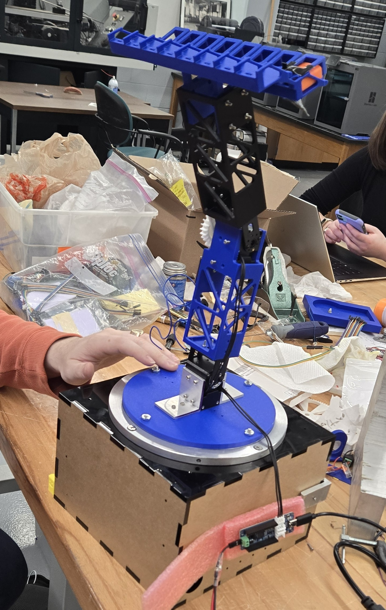

This project involved designing and building a 3 degree-of-freedom robotic arm for the Ride Engineering Competition (REC). The competition tasks teams with designing a portable ride attraction that can fit intisde a defined portable envelope. The ride is then expanded into a defined operational envelope and is set to run for a total of 6 consecutive hours. The ride has a couple major requirments. First, it must have a minmum throughput of 32 riders per minute. This ride can seat 16 riders and runs for a total of 22 seconds per cycle. There is 8 seconds of downtime (0.5 seconds for each ride) as required by REC, resulting in a total throughput of 32 riders per minute. The ride must also reach a minimum acceleration of 2g's, a elevation change of 300mm and a orientation change of 45 degrees. The design of the ride must also fully adhere to the ASTME F22.4 codes and standards for amusment attractions. My team desided to create a 3 dof robotic arm. Arguably, this is not the best engineering decition, but my team was not just in this competition to win, but to learn more about engineering. In order to challenge ourselves and to push our engineering to the limits, we went with a very ambitiouse design. With this arm, we have no need to disasemble into a smaller envelope as it fits in the portable envelope while still hitting the 300 mm required height change.

The mechanism was modeled in SolidWorks and analyzed in ANSYS to ensure structural integrity under peak loads.
The system uses Dynamixel servos controlled by an OpenRB150 microcontroller. Closed-loop control was implemented using encoder feedback.
The arm achieved over 2g acceleration at the end effector and will compete in the Ride Engineering Competition in Hershey, PA.